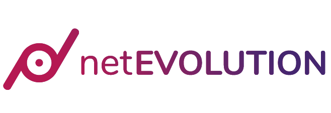
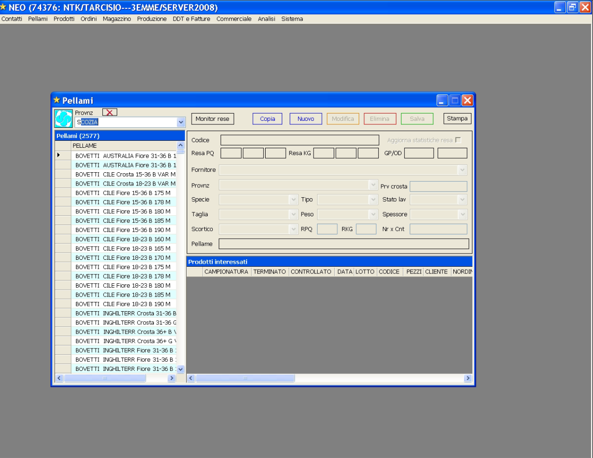
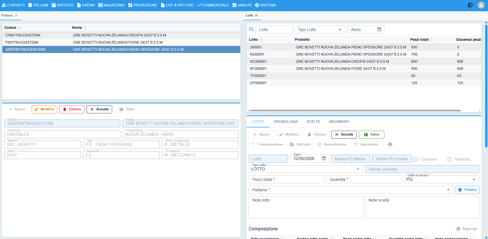
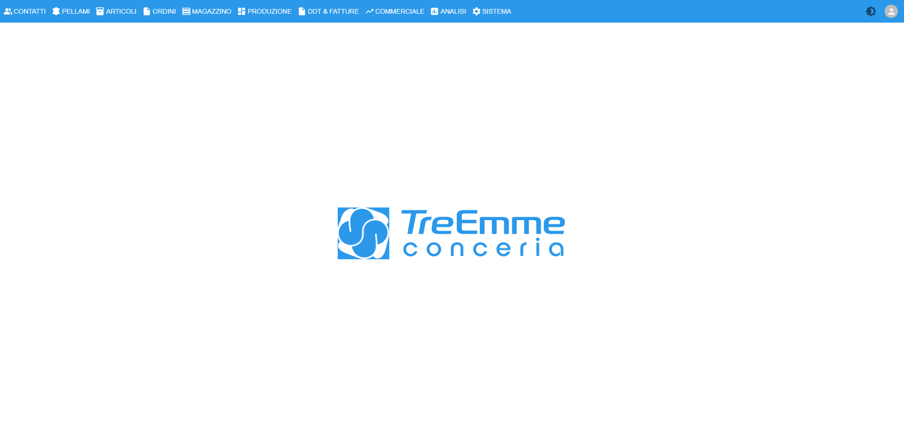
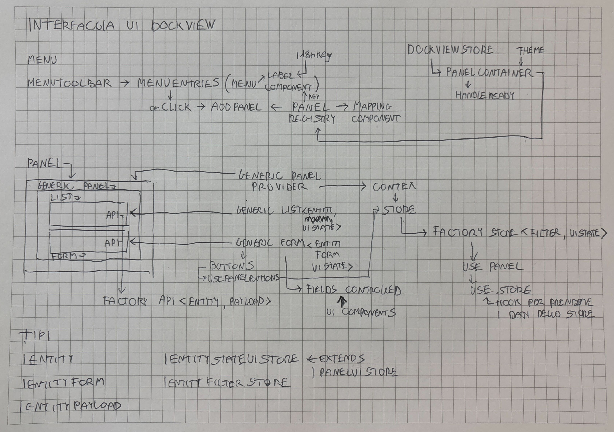
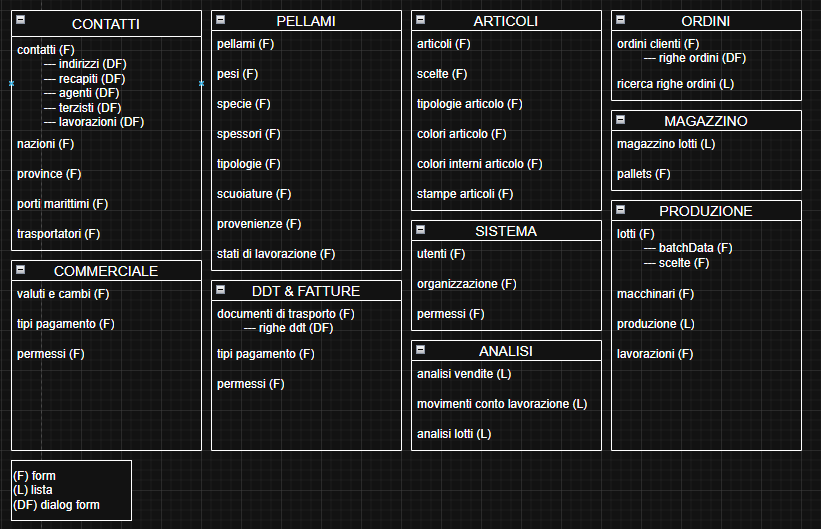
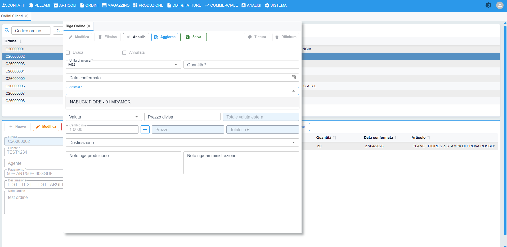
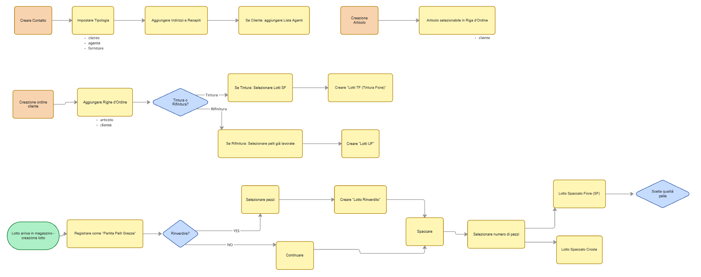
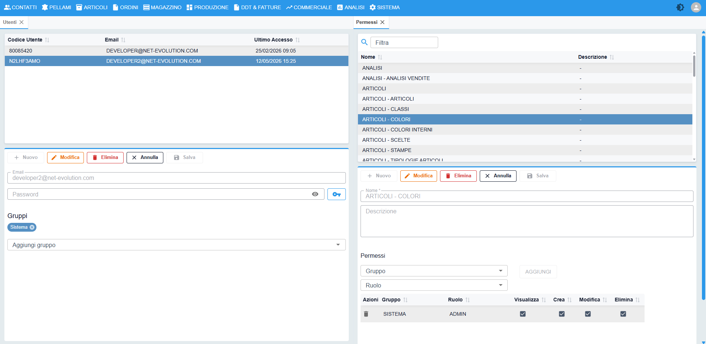
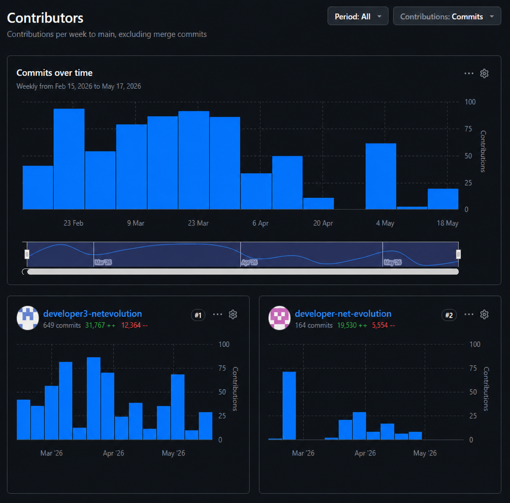

Il presente elaborato documenta l'esperienza di tirocinio curricolare svolta presso NetEvolution, agenzia di web marketing e sviluppo software con sede ad Arzignano (VI). Durante il periodo di stage, ho partecipato attivamente alla progettazione e allo sviluppo del frontend di un software gestionale destinato a Conceria Tre Emme, un'azienda conciaria che necessitava di sostituire un applicativo legacy obsoleto con oltre vent'anni di anzianità.
Il progetto ha riguardato la realizzazione di un'interfaccia utente moderna, modulare e performante, basata su un'architettura a pannelli modulari che consente agli operatori della conceria di gestire simultaneamente anagrafiche, pellami, ordini, lotti di produzione, documenti di trasporto, magazzino e analisi dati. L'intero frontend è stato sviluppato con React 19, TypeScript, Material-UI e la libreria Dockview per la gestione dei pannelli, mentre la gestione dello stato lato server è stata affidata a TanStack React Query e lo stato locale a Zustand.
Nei capitoli che seguono verranno analizzati nel dettaglio il contesto aziendale, le scelte architetturali, le tecnologie impiegate, i risultati conseguiti e le criticità affrontate durante lo sviluppo del progetto.
NetEvolution è un'agenzia di web marketing e sviluppo software con sede ad Arzignano (VI), nel cuore del distretto conciario vicentino. L'azienda opera nel settore delle tecnologie digitali offrendo servizi che spaziano dalla progettazione e realizzazione di siti web e applicazioni web su misura, alla consulenza in ambito marketing digitale e alla gestione di piattaforme software complesse. La vicinanza geografica al distretto della concia ha favorito lo sviluppo di competenze specifiche nel settore conciario, portando l'azienda a specializzarsi nella realizzazione di software gestionali per aziende del comparto.
Il team di sviluppo software, all'interno del quale ho svolto il tirocinio, è caratterizzato da una composizione giovane e dinamica. Non sono presenti figure senior: questa circostanza ha favorito un ambiente di lavoro in cui ogni membro del team ha avuto ampia autonomia decisionale e progettuale. Il supervisore, assente per motivi legati al reparto commerciale, è stato molto aperto nell'accogliere le soluzioni proposte, lasciando spazio all'iniziativa personale e alla crescita professionale autonoma.

Logo di NetEvolution, agenzia di web marketing e sviluppo software.Ho collaborato attivamente con il team di sviluppo software, cooperando quotidianamente e discutendo soluzioni per raggiungere gli obiettivi comuni dei progetti.
Il progetto principale a cui sono stato assegnato è stato lo sviluppo del frontend di un software gestionale per Conceria Tre Emme, un cliente del settore conciario. Parallelamente, un collega si è occupato dell'analisi del database esistente e della sua implementazione nel nuovo backend basato su Symfony (PHP). La suddivisione dei ruoli è stata netta: io mi sono occupato esclusivamente della progettazione e dello sviluppo dell'interfaccia utente, mentre il collega ha gestito la parte backend e la struttura dati.
Questa organizzazione ha richiesto un costante coordinamento per garantire l'allineamento tra le API esposte dal backend e i consumi del frontend, aspetto che ha rappresentato una delle sfide principali del progetto, come verrà approfondito nei capitoli successivi.
Conceria Tre Emme è un'azienda operante nel settore della lavorazione delle pelli che da oltre vent'anni utilizzava un software gestionale sviluppato con tecnologie obsolete. Il vecchio applicativo presentava problemi sempre più pressanti: lentezza operativa, vulnerabilità di sicurezza e un'interfaccia utente datata, tipica delle applicazioni Windows XP. La manutenzione del software era divenuta complessa e costosa, e l'azienda sentiva l'esigenza di modernizzare il proprio strumento di lavoro senza però stravolgere i processi operativi consolidati.

Interfaccia del precedente software gestionale, sviluppato con logica Windows XP, caratterizzato da un'interfaccia utente datata e limitate funzionalità di interazione. Nella schermata è visibile il pannello di gestione pellami.Il cliente ha quindi richiesto un software veloce, con un'interfaccia utente moderna, che non modificasse radicalmente la logica di interazione già nota agli operatori. L'obiettivo era sostituire il vecchio gestionale con una soluzione web-based, accessibile da browser, performante e con un'esperienza utente migliorata.
Per tutta la durata dello sviluppo, ho avuto accesso al computer remoto della conceria per studiare i form dei pannelli già esistenti, in modo da replicarne la struttura e la logica operativa nella nuova interfaccia.

Nuova interfaccia del gestionale: pannello di gestione pellami e lotti, con tabella filtrabile e form di inserimento.
Workspace principale del nuovo gestionale con pannelli aperti: l'interfaccia a tab consente la gestione simultanea di più moduli operativi.Il progetto si è posto i seguenti obiettivi principali:
Il target primario del progetto è costituito dagli operatori di Conceria Tre Emme che quotidianamente utilizzano il software per svolgere le proprie mansioni: impiegati amministrativi, responsabili di produzione, magazzinieri e operatori logistici. Ogni figura professionale interagisce con moduli specifici del gestionale in base al proprio ruolo e alle proprie mansioni.
Gli stakeholder del progetto includono:
I requisiti del progetto sono emersi sia dall'analisi del software legacy sia dal confronto diretto con gli operatori della conceria. Possono essere suddivisi in requisiti funzionali e non funzionali.
Requisiti funzionali:
Requisiti non funzionali:
La scelta delle tecnologie è stata guidata dall'esigenza di realizzare un'applicazione web moderna, performante e facilmente manutenibile. Il processo decisionale ha tenuto conto della popolarità e del supporto della comunità di ciascuna libreria, della qualità della documentazione disponibile e della compatibilità con l'ecosistema React.
Stack tecnologico frontend:
| Layer | Tecnologia |
|---|---|
| Framework UI | React 19 |
| Linguaggio | TypeScript 5.9 (strict mode) |
| Build tool | Vite 7 |
| Router | react-router v7 |
| Stato server | TanStack React Query 5 |
| Stato client | Zustand 5 |
| HTTP client | Axios 1 |
| Libreria UI | Material-UI (MUI) 7 |
| Pannelli modulari | Dockview 5 |
| Form | react-hook-form |
| Tabelle | material-react-table (MRT) |
| Internazionalizzazione | i18next + react-i18next |
| Notifiche | notistack |
| Date | dayjs |
| Immutabilità | immer |
Stack tecnologico backend (realizzato dal collega):
La motivazione alla base della scelta di React come framework frontend risiede nella sua ampia adozione nel panorama dello sviluppo web, nella ricchezza dell'ecosistema di librerie disponibili e nella sua efficienza nel gestire interfacce utente complesse e interattive. TypeScript è stato scelto per garantire una maggiore robustezza del codice grazie al sistema di tipi statici, fondamentale in un progetto con oltre 50 pannelli e centinaia di componenti.
Per la gestione dell'architettura a pannelli è stata adottata la libreria Dockview. Questa libreria consente agli utenti di aprire, chiudere, spostare e organizzare i pannelli in gruppi di tab, esattamente come avviene in un ambiente desktop. La scelta è ricaduta su Dockview perché offre un'API completa e flessibile per la gestione dei pannelli, supporta pannelli flottanti (popup) e si integra perfettamente con l'ecosistema React.
TanStack React Query è stato utilizzato per la gestione dello stato derivante dalle chiamate API. Questa libreria offre un sistema di caching intelligente che riduce il numero di richieste al server, gestisce automaticamente il refresh dei dati e fornisce hook dichiarativi per le operazioni CRUD. Particolarmente utile è stato il meccanismo di invalidazione automatica della cache: quando un pannello esegue una creazione, modifica o eliminazione, React Query invalida automaticamente i dati correlati, garantendo che l'interfaccia rifletta sempre lo stato più aggiornato del database.
Zustand è stato adottato per la gestione dello stato locale dei pannelli. A differenza di React Query, che gestisce lo stato dei dati provenienti dal server, Zustand si occupa dello stato puramente UI, come lo stato dei pulsanti del form, l'ID dell'elemento selezionato, i filtri attivi e le modalità operative. Ogni pannello ha un proprio store Zustand isolato, creato dinamicamente all'apertura del pannello stesso, consentendo a più pannelli dello stesso tipo di coesistere senza conflitti di stato.
L'architettura del frontend è organizzata secondo il pattern feature-sliced, che separa il codice in moduli funzionali (feature) e librerie condivise (shared). Questa suddivisione garantisce separazione delle responsabilità, riusabilità dei componenti e facilità di manutenzione. La struttura delle directory riflette questa organizzazione.
Struttura generale del progetto:
src/
apps/ # Entry point multi-app
default/ # App principale (main.tsx, provider hierarchy)
features/ # Moduli funzionali
auth/ # Autenticazione (login, OTP, logout)
authz/ # Autorizzazione (permessi resource-action)
panels/ # Pannelli dockview (il grosso dell'app)
password-reset/ # Reset password
profile/ # Profilo utente
routing/ # Routing e guard
search/ # Ricerca globale
settings/ # Impostazioni
user/ # Gestione utenti e ruoli
file/ # Visualizzazione file PDF
shared/ # Moduli condivisi
api/ # Layer API (axios, useApi, query keys)
ui/ # Componenti UI riusabili
themes/ # Tema MUI (chiaro/scuro)
helpers/ # Utility (language detection)
interfaces/ # Interfacce condivise
L'architettura a pannelli modulari rappresenta il cuore dell'interfaccia. Il workspace principale è costituito da un contenitore Dockview che ospita i pannelli aperti. Ogni pannello corrisponde a una specifica entità gestionale (contatti, lotti, ordini, ecc.) ed è composto da tre componenti generici riusabili:

Schema dell'architettura a pannelli modulari con la relazione tra i tre componenti generici (GenericPanel, GenericList, GenericForm) e il flusso dei dati.
Elenco completo dei pannelli dell'interfaccia, suddivisi per categoria funzionale: contatti, pellami, prodotti, ordini, produzione, DDT, magazzino, analisi e amministrazione.Questa astrazione si è rivelata fondamentale per la produttività dello sviluppo. Invece di scrivere da capo la logica CRUD per ciascuno dei oltre 50 pannelli, ho definito una volta i componenti generici e poi ogni pannello specifico li ha implementati dichiarando solo le parti variabili: le colonne della tabella, i campi del form, l'endpoint API e le traduzioni. Questo approccio ha permesso di ridurre drasticamente i tempi di sviluppo e di garantire un comportamento coerente su tutta l'applicazione.
Pattern Factory per le API:
Per semplificare la definizione delle chiamate API CRUD, ho implementato il pattern Factory Method attraverso la funzione createPanelApiFactory. Questa factory genera automaticamente cinque hook TanStack Query per ciascun endpoint REST:
useGetList() → GET /endpoint (lettura lista) useGetDetail(id) → GET /endpoint/:id (lettura dettaglio) usePost() → POST /endpoint (creazione) usePut() → PUT /endpoint/:id (modifica) useDelete() → DELETE /endpoint/:id (eliminazione)
Ciascun hook gestisce automaticamente la cache, l'invalidazione dei dati dopo le mutazioni e la gestione degli errori. La definizione di un'API per un nuovo pannello si riduce a poche righe di codice:
export const carrierApi = createPanelApi<ICarrier>({
baseEndpoint: "/shipping-carrier",
queryKey: "CARRIER"
});Questa factory astrae completamente la complessità della gestione delle chiamate HTTP e del caching, permettendo allo sviluppatore di concentrarsi sulla logica di business del singolo pannello.
Gestione dello stato dei pannelli:
Un aspetto critico dell'architettura è stata la gestione dello stato separato per ogni pannello. Poiché l'utente può aprire più pannelli contemporaneamente, anche dello stesso tipo, è fondamentale che ogni istanza mantenga il proprio stato indipendente. La soluzione adottata utilizza Zustand per creare uno store isolato per ciascun pannello al momento della sua apertura:
Pannello Lotti #1 — store Zustand #1 — { selectedId: 5, formEnabled: false }
Pannello Lotti #2 — store Zustand #2 — { selectedId: 12, formEnabled: true }
Pannello Contatti — store Zustand #3 — { selectedId: 3, formEnabled: false }
In questo modo, la modifica dello stato su un pannello non interferisce con gli altri, e i componenti generici possono riutilizzare la stessa logica senza preoccuparsi dell'isolamento dello stato. La creazione dinamica degli store avviene tramite una factory di Zustand che genera un nuovo store ogni volta che un pannello viene aperto, associandolo a un identificatore univoco.
Comunicazione cross-pannello:
Un'altra funzionalità innovativa implementata è la comunicazione tra pannelli. Quando un operatore si trova all'interno di un form (ad esempio, Creazione Ordine) e deve selezionare un contatto che non esiste ancora, può premere invio sul campo select per aprire direttamente il pannello di creazione contatti. Una volta inserito il nuovo contatto, il sistema comunica automaticamente l'ID appena creato al pannello chiamante, popolando il campo select senza che l'utente debba ripetere la selezione.

Esempio di comunicazione cross-pannello: la selezione di un contatto in un form apre automaticamente il pannello di creazione, con ritorno del dato al pannello chiamante.Questo meccanismo è stato realizzato utilizzando la cache di React Query come bus di comunicazione: il pannello creatore scrive l'ID dell'entità appena creata in una query key speciale (LAST_CREATED), mentre il pannello ricevente sottoscrive i cambiamenti di quella key tramite l'hook useSubscribePanel. In questo modo si evita l'accoppiamento diretto tra pannelli, mantenendo l'architettura modulare e disaccoppiata.
Scorciatoie da tastiera:
Per migliorare l'efficienza operativa, sono state implementate scorciatoie da tastiera che rispecchiano le abitudini degli utenti di applicazioni desktop:
| Tasto | Azione |
|---|---|
| F4 | Abilita modifica dell'elemento selezionato |
| F9 | Abilita creazione di un nuovo elemento |
| F10 | Salva il form corrente |
| Esc | Annulla operazione o chiude pannello flottante |
Le scorciatoie sono attive solo sul pannello focalizzato, evitando conflitti quando più pannelli sono aperti contemporaneamente. L'implementazione si basa su un hook personalizzato useKeyboardShortcuts che si registra sugli eventi keydown del documento e verifica lo stato di focus del pannello prima di eseguire l'azione corrispondente.
Schema del flusso di esecuzione:
Il seguente schema rappresenta l'analisi dei processi di concia realizzata per comprendere il flusso di apertura dei pannelli di inserimento dati nella gestione di lotti e ordini:

Schema di analisi dei processi di concia: il diagramma illustra il flusso operativo che lega l'apertura dei pannelli alla gestione dei lotti di produzione e degli ordini cliente.Pannelli di inserimento dati:
Le seguenti immagini mostrano l'interfaccia grafica di inserimento dati a pannelli del software, con i form di creazione e modifica attivi:
Interfaccia di inserimento dati con pannelli aperti in modalità creazione e modifica: si noti la presenza di più tab contemporaneamente.
Pannelli di gestione anagrafiche e dati operativi: la struttura lista-form consente una navigazione efficiente dei dati. Dettaglio dei pannelli con form di inserimento e tabelle di lista: ogni pannello supporta le operazioni CRUD complete.Sistema di permessi e autenticazione:
Il software implementa un sistema di autenticazione a due fattori (password + OTP opzionale) e un sistema di autorizzazione granulare basato su risorse e azioni. Gli utenti appartengono a gruppi (Admin, Staff) e ciascun gruppo ha permessi specifici sulle risorse gestionali (contatti, produzione, ordini, ecc.). Il menu e le route vengono filtrati automaticamente in base ai permessi dell'utente, garantendo che ciascun operatore veda solo i moduli di sua competenza.
Il sistema di autorizzazione opera su tre livelli: a livello di componente (visibilità dei pulsanti e delle sezioni), a livello di hook (verifica dei permessi prima di eseguire operazioni) e a livello di engine (controllo centralizzato delle policy). Questa architettura a strati garantisce che non sia possibile eludere i controlli di autorizzazione, nemmeno intervenendo direttamente sul codice frontend.
Il progetto è stato sviluppato da un team di due persone: io, dedicato interamente al frontend, e un collega, dedicato al backend Symfony e alla struttura del database. La comunicazione tra i due ruoli è stata fondamentale per il buon esito del progetto.
Strumenti di collaborazione:
Metodologia di lavoro:
Il progetto è stato affrontato con un approccio iterativo. Partendo dall'analisi del software esistente, ho progressivamente costruito l'interfaccia a pannelli, aggiungendo funzionalità in modo incrementale. Il flusso di lavoro tipico prevedeva:
Ruolo autonomo:
Data l'assenza di figure senior nel team, ho avuto ampia libertà nelle scelte architetturali e implementative. Ho potuto decidere autonomamente la struttura dei componenti, le librerie da utilizzare e i pattern da adottare. Questa responsabilità ha rappresentato al contempo una sfida e un'opportunità di crescita, poiché ogni decisione doveva essere ponderata considerando l'impatto sulla manutenibilità e sulla scalabilità del progetto.
Al termine del periodo di sviluppo, il frontend del gestionale conta oltre 50 pannelli funzionanti, ciascuno dei quali implementa le operazioni CRUD complete per la propria entità gestionale. I pannelli sono suddivisi nelle seguenti aree funzionali:
Ciascun pannello è dotato di interfaccia di lista con tabella filtrabile e form di inserimento/modifica con validazione dei campi, supporto multilingua e gestione dei permessi.

Statistiche di sviluppo del progetto su GitHub: in tre mesi sono state aggiunte circa 30.000 righe di codice frontend, distribuite su oltre 50 componenti pannello.Dal punto di vista del codice, il progetto ha raggiunto i seguenti risultati quantitativi:
Lo sviluppo del progetto non è stato privo di difficoltà. Le principali criticità affrontate sono state:
Mancanza di obiettivi chiari di sviluppo. Il cliente ha fornito il software legacy con l'intenzione di replicarlo senza un'analisi preventiva strutturata. Questo ha significato che molte funzionalità sono state scoperte e implementate giorno per giorno, senza una specifica tecnica dettagliata. Ho dovuto spesso inferire il comportamento atteso dall'osservazione del vecchio software e dal confronto diretto con gli operatori.
Difficoltà di coordinamento con il collega backend. Il collega responsabile del backend non testava sempre adeguatamente il codice prima che io lo utilizzassi. Questo ha comportato frequenti situazioni in cui le API restituivano dati in formato diverso da quanto concordato, o errori imprevisti che richiedevano correzioni last-minute. La situazione è migliorata nel tempo con l'adozione di un approccio più strutturato al testing.
Complessità nell'analisi dei processi di conceria. Il settore conciario ha processi produttivi specifici e complessi. Ho dovuto scoprire giorno per giorno il funzionamento interno dei processi gestionali della conceria: la gestione dei lotti, le fasi di concia, la composizione dei prodotti, la logistica delle pelli. Questa conoscenza di dominio è stata essenziale per progettare un'interfaccia che rispecchiasse fedelmente il flusso di lavoro degli operatori.
Sfide tecniche specifiche. L'implementazione dell'architettura a pannelli modulari ha presentato diverse sfide tecniche: la gestione dello stato isolato per ciascun pannello, la comunicazione tra pannelli per il passaggio dei dati, la sincronizzazione della cache tra operazioni CRUD concorrenti e la gestione delle scorciatoie da tastiera nel contesto di pannelli multipli. Ogni sfida è stata risolta con soluzioni mirate che hanno arricchito il bagaglio tecnico acquisito durante il progetto.
Il progetto presenta ampi margini di miglioramento e ampliamento. Tra i possibili sviluppi futuri si possono identificare:
Estensione dei moduli funzionali. L'architettura a pannelli modulari si presta naturalmente all'aggiunta di nuovi moduli. Potrebbero essere sviluppati moduli per la gestione della contabilità, la reportistica avanzata con Power BI o l'integrazione con piattaforme di e-commerce per la vendita diretta dei prodotti.
Copertura dei test automatici. Durante lo sviluppo iniziale, la priorità è stata la realizzazione delle funzionalità. Un miglioramento significativo consisterebbe nell'introduzione di test automatici (unit test, integration test, end-to-end test) per garantire la robustezza del codice e facilitare le future manutenzioni.
Miglioramento delle performance. Con l'aumentare del volume di dati gestiti, potrebbero rendersi necessari ottimizzazioni delle performance, come l'implementazione di virtual scrolling più spinto, la lazy loading dei componenti e l'ottimizzazione delle query API.
Personalizzazione dell'interfaccia. Sviluppi futuri potrebbero includere la possibilità per l'utente di personalizzare il layout dei pannelli, salvando le proprie configurazioni, o l'introduzione di dashboard personalizzate con widget riassuntivi.
Il tirocinio presso NetEvolution ha rappresentato un'esperienza profondamente formativa, sia dal punto di vista tecnico che personale. Ho avuto l'opportunità di confrontarmi con un progetto reale, dalle dimensioni significative e con un cliente concreto, sperimentando in prima persona le dinamiche dello sviluppo software in ambito aziendale.
La possibilità di lavorare con ampia autonomia e responsabilità mi ha permesso di sviluppare capacità di progettazione e problem-solving che difficilmente avrei potuto acquisire in un contesto più strutturato e supervisionato. Ogni decisione architetturale, dalla scelta delle librerie alla definizione dei pattern di sviluppo, è stata frutto di analisi e valutazioni personali, con un impatto diretto sulla qualità del prodotto finale.
Durante il progetto ho consolidato e ampliato le mie competenze in diverse aree:
Competenze tecniche:
Competenze metodologiche:
Soft skill:
L'esperienza maturata durante questo tirocinio mi ha fornito una solida base per affrontare le sfide del mondo professionale dello sviluppo software. Le competenze acquisite nello sviluppo di applicazioni web complesse, nell'architettura di sistemi modulari e nella gestione dello stato di applicazioni React sono oggi tra le più richieste dal mercato del lavoro.
Il progetto sviluppato per Conceria Tre Emme rimarrà un punto di riferimento nel mio percorso professionale: un progetto concreto, utilizzato da utenti reali, che ha sostituito un sistema obsoleto con una soluzione moderna e performante, migliorando l'efficienza operativa di un'azienda manifatturiera.
React — Documentazione ufficiale. https://react.dev
TypeScript — Documentazione ufficiale. https://www.typescriptlang.org
Material-UI (MUI) — Documentazione ufficiale. https://mui.com
Dockview — Libreria per pannelli modulari in React. https://dockview.dev
TanStack React Query — Documentazione ufficiale. https://tanstack.com/query/latest
Zustand — Gestione dello stato in React. https://github.com/pmndrs/zustand
Vite — Build tool per frontend moderni. https://vite.dev
react-hook-form — Gestione form per React. https://react-hook-form.com
i18next — Framework di internazionalizzazione. https://www.i18next.com
Axios — HTTP client per browser e Node.js. https://axios-http.com
Symfony — Framework PHP. https://symfony.com
MySQL — Database relazionale. https://www.mysql.com
OnlyOffice — Guida alla bibliografia. https://www.onlyoffice.com/blog/it/2024/01/bibliografia
Fondazione ITS DIGITAL ACADEMY Mario Volpato — https://www.itsdigitalacademy.com